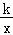
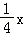

2018年北京市中考数学试题 · 数学解答题 第23题23．（6.00分）在平面直角坐标系xOy中，函数y=（x＞0）的图象G经过点A（4，1），直线l：y=+b与图象G交于点B，与y轴交于点C．（1）求k的值；（2）横、纵坐标都是整数的点叫做整点．记图象G在点A，B之间的部分与线段OA，OC，BC围成的区域（不含边界）为w．①当b=﹣1时，直接写出区域W内的整点个数；②若区域W内恰有4个整点，结合函数图象，求b的取值范围．